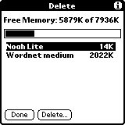

|
Press the button in the lower, left corner to activate menu (note: the actual
icon can be different depending on the model of PDA you're using). Choose menu item "Delete" to switch to delete dialog. |
|  |
Tap on "Noah Lite" to highlight it. Press "Delete" button. Press "Yes" to confirm deletion. Repeat the same for "Wordnet medium". If you have installed additional databases ("Wordnet mini", "Wordnet small" or "Wordnet full") delete them as well. |
|
Tap on "Noah Pro" to highlight it. Press "Delete" button. Press "Yes" to confirm deletion. |

|
Tap on "Noah Demo" to highlight it. Press "Delete" button. Press "Yes" to confirm deletion. |